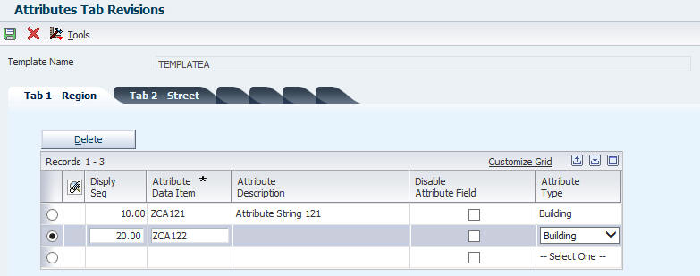

How to change the Displayed Label on Unit Search (P15217) for Attributes Added for Filtering
Purpose of Document
This document explains how to override the displayed column labels for custom Attribute Templates in Unit Search (P15217).
The following screenshot shows an example of this new functionality.
Note:
This functionality is applicable from EnterpriseOne application release 9.1 update 2.
This functionality is implemented via Enhancement <Bug 14344995> - ATTRIBUTE SEARCH FUNCTIONALITY CODES
For objects added/changed can be viewed at solution section below.
User would like to change the label displayed on the Work with Units (W15217A) form for those generic fields (e.g. Attribute String 121) to something meaningful for easier use of this application. For this example, user wants to change it to 'Region'. How to archive this?
Objects Added with Enhancement
First of all, newly added DD items can be found here.
And list of newly added objects are:
Real Estate Attributes - V15211
Attribute Details - P1524
Unit Attribute Template Fields - V15221
Unit Attribute Template Name - V1522
Attribute Template Definition - P1522
Unit Attribute Template Fields - F15221
Unit Attribute Template Name - F1522
Real Estate Attributes - F15211
One View Property Fetch - B1501260
One View Property Fetch - D1501260
One View Property Inquiry - P15260
One View Attribute Inquiry - P15270
One View Property Inquiry - T15260
One View Attribute Inquiry - T15270
One View Attribute Inquiry - V15270
Unit Search - T15217
Property / Building Information - T15062
Floor Information - T1506
Unit Search - P15217
Property / Building Information - P15062
Floor Information - P1506
Copy Attributes - N1500551
Retrieve DD Description - N1500550
How to Populate Tabs and Controls in Unit Search (P15217)
Tabs and Controls can be added using the following steps:
1. Add Attributes Template (P1522)
Note:
Currently Template Name accepts both Upper case and lower case information. But to minimize any future confusion populate it with upper case only.
If possible set all values with easier interface which is to be used in P15217 (Unit Search) application for additional filtering if needed
2. Add Attribute Data Items per tabs you have created in Step 1:

Note:
Attribute Data Item is available can be chosen based on F15211 (Real Estate Attributes)
By default, each DD item has generic name
How to Change Form Control Label (or Column Heading)
To change a label, follow the general Data Dictionary modification routine.
Columns to be changed:
Note:
To set meaningful Column Hading, first it check F9202.DSCR (DescriptionRow) per language preference in your user profile. If there is not valid data then it gets Description (F9203.DSCA). But we do not recommend to override Description
Currently there is reported issue which is not able to pull valid override information. For detail, refer to <Bug 18051719> - P15217 DOES NOT SHOW OVERRIDEN DESCRIPTION FOR ATTRIBUTE DATA ITEM FROM F9202
How to Deploy the Change Made
The changes made to the Data Dictionary item must be deployed. For detail, refer to <Document 626511.1> E1: DD: Deploying Data Dictionary Changes.